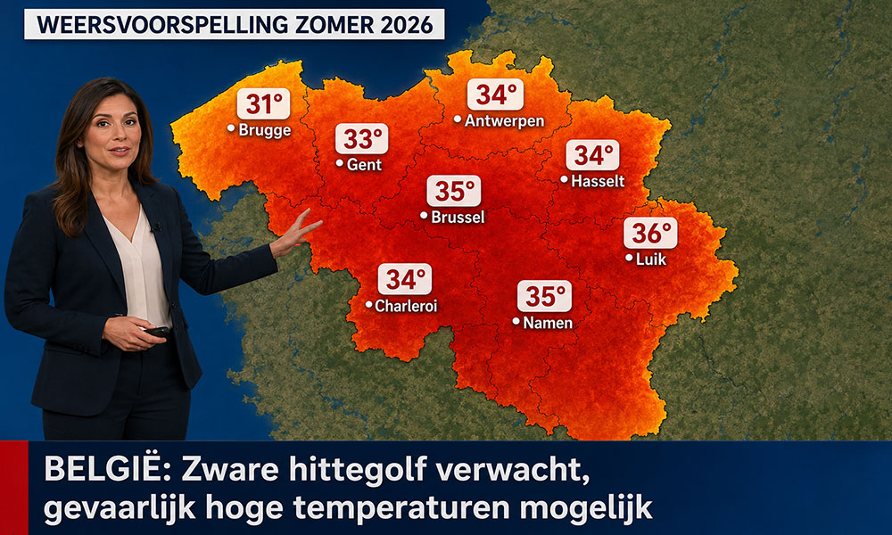
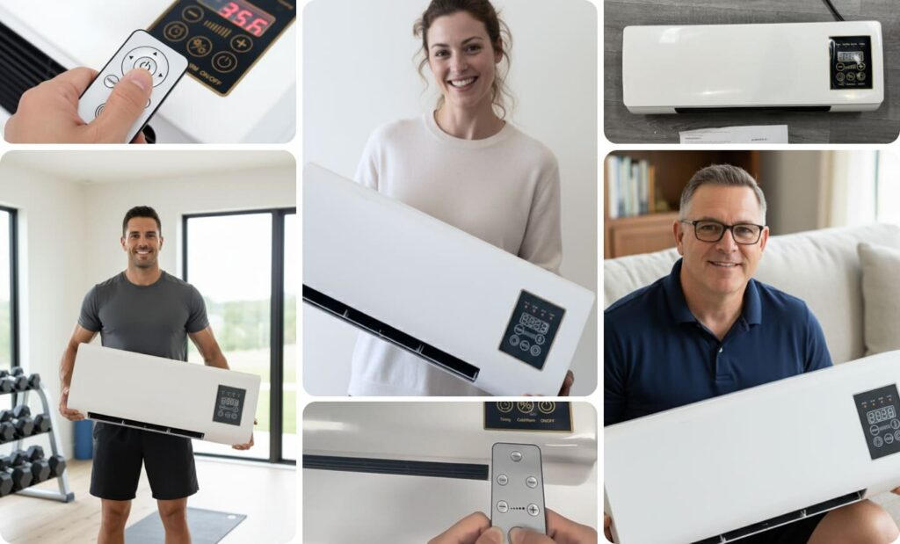

Advertentie
Recordhittegolven in 2026: deze airconditioner van €137.99, ontworpen door een Belgische ingenieur, zet dure systemen in de schaduw

Zeg vaarwel tegen onbetaalbare airconditioners en dure installateurs. Dit nieuwe koelapparaat vereist nul installatie, maakt elke kamer binnen enkele minuten ijskoud en beschermt u tegen de valstrik van torenhoge energierekeningen.

Meteorologen zijn het erover eens: de voorspellingen wijzen erop dat de zomer van 2026 alle eerdere records gaat verbreken. Voor miljoenen mensen vormt de naderende hittegolf echter een enorme uitdaging.
De elektriciteitsprijzen zijn al sky-high en blijven onverbiddelijk stijgen. Iedereen die zijn huis nu probeert te koelen met een conventionele airconditioning, staat voor een flinke financiële last.
Het probleem met traditionele airconditioning:
• Astronomische aanschafkosten: Consumenten moeten meestal rekening houden met enkele duizenden euro's voor de unit alleen.
• Gecompliceerde installatie: Wekenlang wachten op monteurs, lawaaierige werkzaamheden en dure gaten die door uw muren worden geboord.
• De dagelijkse energieval: Het laten draaien van een standaard airco kan zomaar €10 aan stroom per dag opslokken. Dat betekent een extra belasting tot wel €300 per maand — alleen om wat verlichting van de hitte te krijgen.
Kortom: het is een luxe die bijna niemand meer kan — of wil — betalen.
Het keerpunt: Een insider uit de industrie doet een boekje open
Dit is precies waar een voormalig ingenieur in actie kwam. Hij werkte jarenlang op de R&D-afdeling voor een van 's werelds grootste airco-fabrikanten en zag met eigen ogen hoe kunstmatig duur koeling in huis wordt gemaakt voor de consument.
Zijn doel was kristalhelder: een betaalbare oplossing creëren voor iedereen. Een apparaat dat arctische omstandigheden levert, maar absoluut geen installatie vereist en nauwelijks stroom verbruikt.
Na een ontwikkelingsfase van drie jaar is het hem eindelijk gelukt.
We hebben het over de Coolizi Coolzy.

Het verhaal achter de innovatie
Het brein achter de Coolizi Coolzy is de Belgische ingenieur Lukas de Wit. Toen het ingenieursbureau van zijn vader op de rand van de afgrond stond, nam Lukas ontslag bij zijn internationale werkgever om te gaan helpen. Midden in het ontwikkelingsproces kwam zijn vader onverwacht te overlijden. Lukas zette alleen door – en met succes: hij redde het familiebedrijf en behield daarmee alle 13 lokale arbeidsplaatsen in Amsterdam.
Vandaag de dag verbreekt de Coolizi Coolzy alle verkooprecords. Ondanks de enorme vraag weigert Lukas over te stappen op goedkope massaproductie:
"Multinationals wilden het patent van de Coolizi Coolzy voor miljoenen euro's kopen om de productie naar het buitenland te verplaatsen. Dat heb ik geweigerd. Wij produceren strikt volgens de hoge kwaliteitsnormen van mijn vader. Ik lever liever iets langzamer, dan dat ik een ondermaats product verkoop."
Een blik op de techniek van de Coolizi Coolzy laat precies zien waarom deze uitvinding de markt volledig op zijn kop zet.

Het geheim achter de arctische koelte: Wat maakt de Coolizi Coolzy zo uniek?
Conventionele airconditioningsystemen vertrouwen op zware, luidruchtige compressoren en chemische koelmiddelen. Ze verbruiken enorme hoeveelheden stroom om de temperatuur met brute kracht omlaag te krijgen. Lukas de Wit heeft dit verouderde concept volledig omgegooid.
De Coolizi Coolzy maakt gebruik van een geavanceerd principe van thermische absorptietechnologie. Het compacte apparaat zuigt de warme, klamme binnenlucht aan en leidt deze door een intern verzegelde koelkamer. Een speciaal nano-honingraatfilter onttrekt de warmte-energie op moleculair niveau aan de lucht en zet deze onmiddellijk om in een kristalheldere, aangenaam droge en ijskoude luchtstroom.
Het resultaat is een schone technologie die op drie belangrijke punten ongeëvenaard is op de markt:
• Lager stroomverbruik: Waar een klassieke airconditioning tot wel 2.000 watt uit het stopcontact trekt, heeft de Coolizi Coolzy slechts 45 watt nodig. Dat is minder dan een ouderwetse gloeilamp! Het koelen van je kamer kost je slechts een paar cent per dag.
• Geen installatiegedoe (zonder afvoerslang): Traditionele mobiele airco's hebben een dikke slang nodig om warme lucht door een open raam naar buiten te voeren — wat ironisch genoeg weer warmte naar binnen laat. Omdat de Coolizi Coolzy de warmte-energie intern neutraliseert, werkt deze volledig zonder slang. Gewoon de stekker in het stopcontact, aanzetten en klaar. Je verplaatst hem moeiteloos van kamer naar kamer.
• Perfect gebalanceerde luchtkwaliteit: Normale airconditioning droogt de lucht volledig uit, wat vaak leidt tot verkoudheid, keelpijn of prikkende ogen. De thermische technologie van de Coolizi Coolzy filtert tegelijkertijd stofdeeltjes uit de lucht, wat zorgt voor een natuurlijke, verfrissende luchtkwaliteit die zeer zacht is voor de luchtwegen.

Dit zeggen klanten over de Coolizi Coolzy:
⭐⭐⭐⭐⭐ "Ik was eerst sceptisch of zo'n compact apparaat zonder enorme afvoerslang de intense hitte op de bovenverdieping wel aan kon. Maar de Coolizi Coolzy heeft me echt verrast. In slechts 15 minuten ging mijn slaapkamer van een broeierige 28 graden naar een heerlijk koele 19 graden. Je voelt direct de hoogwaardige kwaliteit; het is absoluut geen goedkope importtroep. Elke cent dubbel en dwars waard!" – Daan K. uit Amsterdam
⭐⭐⭐⭐⭐ "Vorig jaar zomer deed ik door de hitte bijna geen oog dicht. Een traditionele airco was geen optie vanwege de exploderende energieprijzen en de hoge kosten voor een installateur. Nu laten we de Coolizi Coolzy bijna elke avond draaien in de slaapkamer. Hij is ontzettend stil, blaast heerlijk frisse lucht en verbruikt heel weinig stroom. Ik zie nauwelijks verschil op mijn energierekening. Ik kan eindelijk weer de hele nacht doorslapen." – Julia T. uit Utrecht
⭐⭐⭐⭐⭐ "Van gewone airco krijg ik bijna direct een droge keel en last van mijn ogen. Met de Coolizi Coolzy is dat totaal anders: de lucht voelt als een frisse zeebries, heel comfortabel. Omdat het apparaat zo licht is, staat hij overdag in mijn werkkamer en gaat hij 's avonds mee naar de slaapkamer. Stekker erin en genieten maar. Dat noem ik nou briljant Nederlands vakmanschap." – Mark M. uit Rotterdam
⭐⭐⭐⭐⭐ "Ik zocht een probleemloze oplossing voor mijn vakantiehuisje. Ik wilde geen installateurs die gaten in mijn muren moesten boren. De Coolizi Coolzy werd razendsnel geleverd, ziet er ontzettend strak uit en werkte vanaf de eerste dag perfect. De wetenschap dat ik hiermee ook een lokaal familiebedrijf en de werkgelegenheid in de regio steun, maakte de beslissing nog makkelijker. Een echte aanrader voor de zomer!" – Maarten B. uit Amsterdam

Veelgestelde Vragen
• Vereist de Coolizi Coolzy een ingewikkelde installatie? Nee, absoluut niet. Je hebt geen monteur, gereedschap of gaten in de muren nodig. Plaats het apparaat simpelweg waar je maar wilt, steek de stekker in een standaard stopcontact en zet hem aan.
• Moet ik hem constant met water bijvullen? Nee, het ingebouwde reservoir is uiterst efficiënt. Eén keer vullen is voldoende om de Coolizi Coolzy tot wel 8–10 uur onafgebroken te laten werken—ideaal voor een volledige en ongestoorde nachtrust.
• Is het apparaat te luid voor in de slaapkamer? Nee. In tegenstelling tot loeiende airco-units met compressoren, is de Coolizi Coolzy specifiek ontworpen voor een fluisterstille werking. Hij verstoort je niet, of je nu tv kijkt of probeert te slapen.
• Welk oppervlak kan de unit effectief koelen? Hij kan met gemak 80 tot 120 vierkante meter aan. Laat de binnendeuren gewoon openstaan, zodat de ijskoude lucht optimaal kan circuleren en je hele huis of appartement effectief kan afkoelen.

Waar kan ik de Coolizi Coolzy kopen?
Om ervoor te zorgen dat de Coolizi Coolzy voor iedereen betaalbaar blijft, is deze alleen rechtstreeks verkrijgbaar via de officiële webshop. Lukas slaat bewust tussenpersonen en grote winkelketens over, die de prijs anders tot enkele duizenden euro's zouden opdrijven.
100% Niet-Goed-Geld-Terug Garantie
Omdat de Coolizi Coolzy het laatste passieproject was waaraan Lukas met zijn overleden vader werkte, draait het voor hem niet om het maken van enorme winst. Hij wil simpelweg dat elke klant tevreden is en dat hij zijn toegewijde personeel kan blijven betalen.
Daarom is zijn beleid heel simpel: als je niet absoluut enthousiast bent, krijg je je geld terug, zonder mitsen of maren en zonder vragen. Test de Coolizi Coolzy gedurende 1 tot 2 maanden, en als je niet volledig tevreden bent, ontvang je een volledige terugbetaling van 100%! Je loopt dus absoluut geen enkel risico.
Laat je niet misleiden door namaak of goedkope imitaties! - Als je er zeker van wilt zijn dat je het originele product koopt, volg dan deze stappen:
Let op: De huidige flitsverkoop met 50% korting is actief!
Check de onderstaande link om te zien of de actie nog loopt en stel jouw exemplaar veilig voordat de huidige voorraad volledig is uitverkocht:
👉 [KLIK HIER: Bezoek de officiële website van de fabrikant met 50% korting]
⭐⭐⭐⭐⭐ Bram L. uit Amsterdam: "Koelt ons hele appartement van 93 m²! Ik was sceptisch over de claims, maar het werkt echt. We laten de binnendeuren gewoon openstaan en de ijskoude lucht verspreidt zich door het hele huis. De verstikkende hitte is volledig verdwenen."
⭐⭐⭐⭐⭐ Sanne R. uit Rotterdam: "Eindelijk geen angst meer voor de energierekening! We laten dit apparaat op warme dagen non-stop draaien. Mijn slimme meter app laat nauwelijks een piek in verbruik zien. Als ik bedenk dat mijn buurman €10 per dag betaalt om zijn oude systeem te laten draaien, weet ik dat ik de juiste keuze heb gemaakt."
⭐⭐⭐⭐⭐ Michiel W. uit Utrecht: "Uitpakken, aanzetten, ijskoud. Geen afvoerslang, geen boren, geen gedoe met monteurs. Dit is precies wat ik zocht voor mijn huurwoning. Gewoon neerzetten, stekker erin en direct genieten. Een geniale uitvinding."
⭐⭐⭐⭐⭐ Emma S. uit Eindhoven: "We slapen weer als roosjes. Die benauwde zomernachten waren voorheen een absolute verschrikking voor ons. De Coolizi Coolzy is fluisterstil en maakt de slaapkamer heerlijk koel. De zomer van 2026 mag komen—wij zijn er helemaal klaar voor."
⭐⭐⭐⭐⭐ Daan H. uit Den Haag: "Geweldige kwaliteit en een project met echt hart voor de zaak. Je ziet direct dat dit is ontwikkeld met echt Nederlands vakmanschap, geen goedkope plastic rommel van ver weg. Het is een prachtig lokaal bedrijf dat ik met deze aankoop met veel plezier ondersteun."
⭐⭐⭐⭐⭐ Bram M. uit Amsterdam: "Heeft me duizenden euro's bespaard! Een lokale installateur wilde me bijna €3.000 rekenen voor de installatie van een centraal aircosysteem. De Coolizi Coolzy koelt mijn kamers net zo goed, kost me slechts een fractie van de prijs en verbruikt nauwelijks stroom."
⭐⭐⭐⭐⭐ Sanne B. uit Utrecht: "Geen last meer van droge ogen of verkoudheid in de zomer. Normale airco geeft me altijd direct keelpijn en droge ogen. De lucht van de Coolizi Coolzy is ontzettend comfortabel, fris en natuurlijk koel. Perfect voor mensen met allergieën en iedereen die gevoelig is."
✅ Geen installatie nodig
✅ Koelt volledige appartementen
✅ Belgisch ontwerp